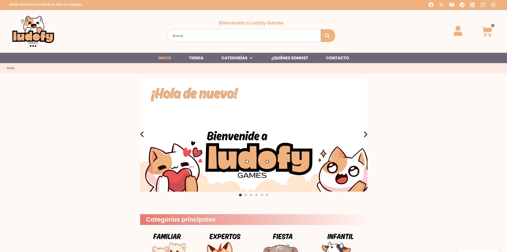
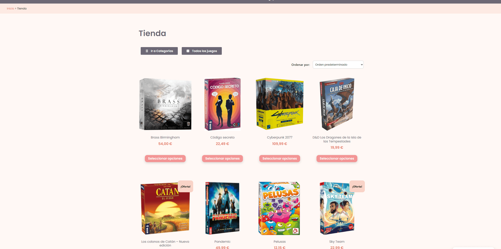
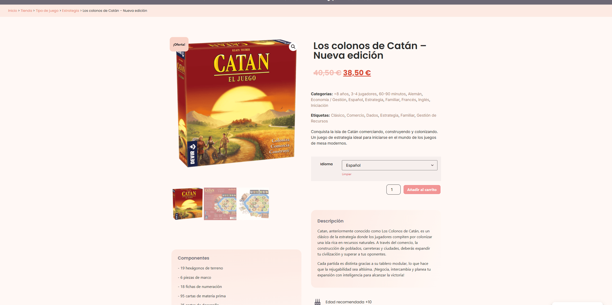
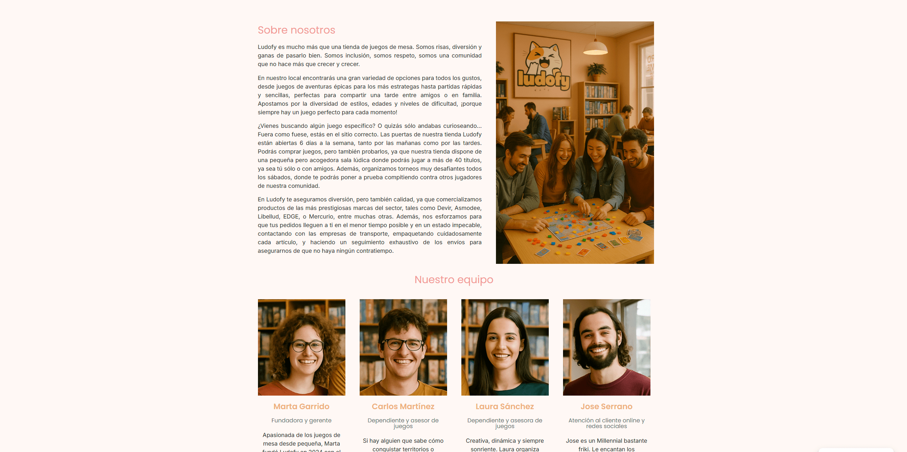

Proyecto: Ludofy - Tienda Ficticia de Juegos de Mesa con WordPress
OBJETIVO DEL PROYECTO
Ideación, diseño de identidad visual corporativa digital y creación y programación de la página web de una tienda de juegos de mesa. Se trata de un proyecto ficticio realizado como Trabajo Final de Máster (TFM) para la Escuela de Diseño CEI de Valencia. Se centra en el desarrollo y la construcción básica de la marca tanto visual como textual (branding-logotipo) para el ámbito online digital, así como en el diseño, construcción y maquetación de una plataforma online donde los clientes pueden comprar juegos de mesa y otros accesorios lúdicos de forma rápida y sencilla. La página web final es adaptable y ha sido realizada con lenguajes HTML5, CSS3 y Javascript. La tienda online no está en uso; es enteramente ficticia y no se dispone de stock ni se venden productos reales.
PROCESO DE TRABAJO
1
Se trabajó en la creación de la identidad visual que iba a tener la empresa. Se reflexionó sobre la paleta de colores, la tipografía y las ideas y emociones que se buscaban
transmitir. El objetivo de Ludofy es que el cliente se encuentre con una web acogedora, cálida y familiar, que no le intimide.
Es por ello que utiliza una estética minimalista y juvenil, con personajes adorables que contribuyen a que la web adquiera un
carácter amable e informal. La paleta de colores está repleta de tonos suaves pastel, donde predominan el naranja claro y el blanco.
La web de Ludofy se centra especialmente en la venta de juegos de mesa, pero también incluye otras secciones importantes como "¿Quiénes somos?",
donde los usuarios pueden conocer todos los detalles sobre el origen y el significado del proyecto, o "Contacto", donde pueden comunicarse con el equipo de
Ludofy rellenando un formulario.
Los juegos de mesa de la tienda web de Ludofy se clasifican en las siguientes categorías:
Idioma
Tipo de juego
Duración de la partida
Edad recomendada
Dificultad
Número de jugadores
2
Se utilizó WordPress y Elementor para desarrollar el proyecto. Se instalaron todos los plugins necesarios y se configuró Elementor Pro para trabajar con él. A continuación, se maquetaron las distintas páginas de la web comenzando por la página principal, donde se le da la bienvenida al usuario y se exponen las principales categorías de la web, varios banners promocionales, y se presentan los juegos de mesa más vendidos, las últimas novedades y los juegos que están en oferta.
3
Se diseñaron y maquetaron el resto de páginas y se enlazaron las unas con las otras mediante un menú superior en línea (formato desktop) y hamburguesa (formato móvil). Se implementó el formulario de contacto y se diseñaron con Canva las distintas imágenes, iconos y stickers de la web, muchas de ellas en formato PNG. También se confeccionó una plantilla para los juegos de mesa, que se tomó como referencia cada vez que se añadía un juego nuevo. Poco a poco el número de items de la web fue creciendo y se decidió crear un sistema de clasificación y filtrado de juegos para facilitar la navegación del cliente y la búsqueda de artículos similares, así como una barra de búsqueda para poder encontrar juegos concretos fácilmente.
4
Por último, se configuró un sistema de pasarela de pagos para que el cliente pudiese completar su pedido. Mediante un formulario, el sistema recoge datos importantes referentes al envío: dirección postal, correo electrónico, teléfono de contacto, tipo de envío (económico o premium)... y se debe seleccionar un método de pago. Una vez finalizado el proceso, el pago se realiza y Ludofy recibe el pedido en cuestión. El cliente no tardará en recibir su(s) artículo(s).
PROGRAMAS Y SOFTWARE
WordPress
Canva
HTML5
CSS3
Javascript
GALERÍA DE IMÁGENES



